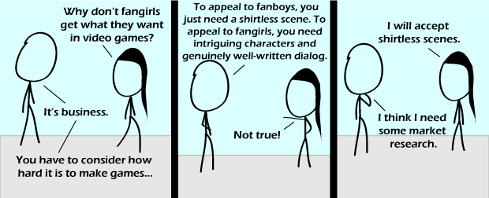

Comic JK 578
When I Feel Like It
⇤
<
?
>
⇥

⇤
<
?
>
⇥
Forum
.
RSS
.
Digg
.
Facebook
.
Reddit
.
Twitter
.
Stumbleupon
vvv Dubya. Tee. Eff. vvv Single layer nylon braid gives the best shock absorbency, for rsuece use in smaller boats we use 30mm up to 3000 kg, 45mm to 5000kg etc the exact loadings will depend on what it is you specify. The tow and towed vessel mass and conditions under tow are also critical in choosing your lines and methods. Ends are internally back-spliced into eyes with no knots ever used rated strength is reduced by 50% if a knot is used, and another 20% just when the nylon gets wet so be sure of what you are doing.You are better joining a local sea rsuece organisation and learning the requirements and gaining enough experience and sea time so you can get tickets and then get effective insurances. Once you offer a commercial service both you and your vessel will have to comply with commercial requirements you may need to do some more homework on this one, as simply calling yourself something is not sufficient to qualify yourself.